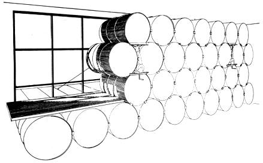
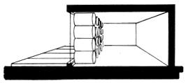
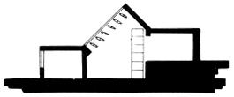

[1] The Solar Heater Plans are complete, working blueprints for assembling a water heater/solar shower. Direct systems and antifreeze systems, copper or steel collectors and other construction choices are thoroughly explained right on the design . . . so that each owner-builder can modify the plans to his or her own personal taste. The retail cost of materials for this heater (not including the tank) will probably vary from $150 to $200, but recycle/reuse advocates can follow Steve's construction tips with scavenged supplies.
[2] The Drum Wall Plans-based upon Steve's own now-famous solar-heated home in Albuquerque-provide a simple, direct and efficient method of collecting, storing and radiating the sun's rays so as to both heat and cool an average home. This complete, working design also provides a rundown on the kinds of weather data, insulation problems and construction details anyone needs to understand to decide whether the drum wall can provide an economically profitable answer to his or her individual energy needs.
So what if you're not quite sure what a reflector, silicone sealant, collector panel or drum clip is right now? The Baer distillation of solar-power-at-work provides all the expertise you'll need to harness the power of the sun . . . and to enjoy the financial profits and ecological rewards of using clean, free energy. Each set of plans-containing two gigantic sheets of detailed construction diagrams and expert Baer advice-is available at $5.00 a copy from Zomeworks Corporation, Box 712, Albuquerque, N.M. 87103.-CK.
Exposed drums with 8' high exterior doors
Interior patio drum wall with skylid
|
 Exposed drums with 8' high exterior doors |
 Interior patio drum wall with skylid |
 |